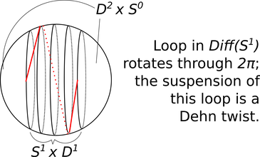

The Gromoll filtration
The Gromoll filtration
In my latest preprint with Georgios Dimitroglou Rizell, we use the topology of diffeomorphism groups of high-dimensional spheres to produce interesting examples of nontrivial topology in symplectomorphism groups of cotangent bundles. Until we started thinking about this, I didn’t know much about the higher homotopy groups of \(Diff(S^n)\) so here is some interesting stuff I learned while we were writing this paper.
The mapping class group \(\pi_0(Diff(S^n))\) is a finite abelian group and it comes with a natural filtration by subgroups called the Gromoll filtration (thanks to Oscar Randall-Williams for telling us what it was called – once something has a name it suddenly becomes easier to find out what is known about it). Let me write this (in probably non-standard notation) as:
\[\cdots \subset G_k(n)\subset G_{k-1}(n)\subset\cdots\subset G_1(n)\subset G_0(n)=\pi_0(Diff(S^n))\]
The subgroup \(G_k(n+k)\) is the image of \(\pi_k(Diff(S^{n+k}))\) under a natural homomorphism. The homomorphism is defined as follows. Think of \(S^{n+k}\) as \((S^n\times D^k)\cup_{S^n\times S^{k-1}} (D^n\times S^{k-1})\). Represent an element of \(\pi_k(Diff(S^n))\) as a map \(F\colon D^k\to Diff(S^n)\) (\(F(y)=\phi_y\colon S^n\rightarrow S^n\)) for which \(S^{k-1}=\partial D^k\) is sent to \(1\in Diff(S^n)\). Now consider the map \(\Phi: S^{n+k}\to S^{n+k}\) which equals the identity on \(D^n\times S^{k-1}\) and equals \(\Phi(x,y)=(\phi_y(x),y))\) on \(S^n\times D^k\). For suitably smooth \(F\), \(\Phi\) is a diffeomorphism of \(S^{n+k}\) and the map \([F]\mapsto [\Phi]\) is the homomorphism whose image is the subgroup \(G_k(n+k)\) in the Gromoll filtration.
We can think of this homomorphism \(\pi_k(Diff(S^n))\rightarrow \pi_0(Diff(S^{n+k}))\) as a “suspension” map. To understand visually what this suspension looks like, here (see Figure 1) is a familiar example in the case \(k=1\), \(n=1\). There is an obvious loop in \(Diff(S^1)\) (namely the loop of rotations: \(F(y)\) is the rotation by \(2\pi y\) radians).

Figure 1. How elements of \(G_1\) arise from loops in diffeomorphism groups.
Suspending this loop by the above prescription gives us the Dehn twist on \(S^2\). Unfortunately the Dehn twist on \(S^2\) is trivial in the mapping class group, but this should give you a sense of how the diffeomorphisms in \(G_1(n)\) arise.
In fact, \(G_1(n)\) is completely understood. Cerf’s pseudoisotopy theorem implies that \(G_1(n)=\pi_0(Diff(S^n))\): every mapping class of an \(n\)-sphere arises by suspending a loop of diffeomorphisms of \(S^{n-1}\), that is “cutting along a \(S^{n-1}\) and regluing with a twist”. But to get a nontrivial mapping class, the twist is necessarily more complicated than the loop of rotations.
Nontrivial elements in higher homotopy groups are sometimes fiddly to get one's hands on; suspending an element \(\alpha\in\pi_k(Diff(S^{n}))\) and looking at its image in the mapping class group of an \((n+k)\)-sphere, then using that mapping class as a gluing map to stick two discs together and make an exotic \((n+k+1)\)-sphere lets you turn \(\alpha\) into a manifold (\(S^{n+k+1}_{\alpha}\) in our notation), from which it is maybe easier to extract an invariant to prove nontriviality. For example, if the resulting exotic sphere does not bound a parallelisable manifold then the original homotopy class must have been nontrivial. This (via an incredible theorem of Abouzaid) is the way the Gromoll filtration enters into our work: if a homotopy class survives in \(G_k(n+k)\) modulo the subgroup of \(G_k(n+k)\) consisting of exotic spheres bounding parallelisable manifolds then we can use the homotopy class to construct nontrivial topology in the symplectomorphism group of \(T^*S^n\).
So it is important for us to know when \(G_k(n+k)\) is nontrivial. Fortunately, there are many interesting calculations of the higher groups \(G_k\) in the literature, providing a convenient way to detect nontrivial higher homotopy in the diffeomorphism groups of spheres.